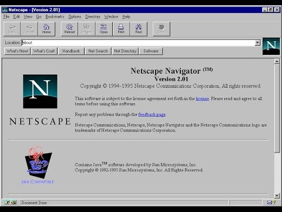

1993
Em 1993 em Genebra, um inglê chamado Timothy Berners-Lee ou Tim Berners-lee, foi responsável por uma tecnologia muito importante que a gente tem até hoje, ele pesquisou um meio de transformar o conteúdo em algo mais interativo, através de ligações entre documentos, surgiu então a linguagem HTML, que foi criada por ele e por sua equipe, assim como o protocolo HTTP, que se juntou ao conjunto de protocolos TCP/IP, que fazem parte da Internet e, também fundou a World Wide Web, a www que a gente usa até hoje.
Então basicamente quando você abre o navegador e digita www alguma coisa, você está utilizando uma tecnologia que foi inventada em 1993 por Tim Berners-Lee e sua equipe que trabalha no CERN, que é uma Organização Europeia para Pesquisa de Energia Nuclear.
Tim Berners-Lee , cientista da computação britânico
Nesse mesmo ano, para que todas essas invenções de Tim Berners-Lee funcionasse era necessário um navegador. Surgia então, nos EUA, o Mosaic, que era uma criação de um outro pesquisador, em outro centro de pesquisa o NCSA, ou Centro Nacional de Aplicações de Supercomputadores, esse pesquisador era o Marc Andreessen.
Marc Andreessen criador do navegador Mosaic
O Mosaic foi um navegador muito importante para a evolução da tecnologia porque ele foi o primeiro, uma adaptação de um interpretador de Gopher que era um protocolo anterior ao HTTP, ele (Mosaic) também funcionava com HTTP e também mostrava páginas web.
Inclusive Marc Andreessen foi muito importante em 1994, quando ele saiu da NCSA se juntou com o bilionário e fundador da Silicon Graphics, chamado Jim Clark, e juntos fundaram uma empresa chamada de Netscape.
A empresa Netscape criou um navegador baseado no Mosaic e com toda a experiência que Andreessen tinha facilmente se tornou o navegador mais famoso da internet.
E uma curiosidade que tinha no Netscape: a equipe interna de desenvolvimento sempre colocava nomes engraçados nas coisas. Um dos projetos internos dentro da Netscape, era um grupo que homenageava o Godzilla, aquele bichão japonês gigante . O nome do grupo era Mozilla e com certeza você já ouviu falar nesse nome.
1995
O HTML era muito estático e foi aí, em 1995 que um ex-funcionário da Silicon Graphics, que trabalhava para Jim Clark passou da Silicon Graphics para dentro da Netscape. O nome do sujeito era Brendan Eich, ele era um desenvolvedor e a tarefa dele foi a seguinte: criar uma linguagem que desse mais funcionalidades ao simples html que existia na época, essa linguagem recebeu nome de mocha
Brendan Eich
Nome JavaScript
Ao mesmo tempo que Brendan Eich criava a linguagem Mocha que na verdade já era conhecida como LiveScript , estava nascendo a linguagem Java. Essa linguagem Java ganhou um sucesso muito grande na mídia, a mídia chamava de “a linguagem do futuro”.
E aproveitando o sucesso do Java a Netscape mudou nome de Live Script para javaScritp numa grande jogada de marketing
JavaScript acabou fazendo bastante sucesso,atraindo o olhar da grande microsoft que Logo após ter lançado o famoso internet explorer , que basicamente era o código base do Mosaic. (O Mosaic ficou com o NCSA, ele foi passado para uma empresa, essa empresa foi comprada pela Microsoft que pegou o código do Mosaic, e ,essa é a história do explorer.)
O explorer foi lançado perto do ano de 1995, junto com o Windows 95. A Microsoft de olho no JavaScript lançou a própria linguagem, o jscript que basicamente era o próprio JavaScript, com os mesmos comandos e algumas melhorias.
Para evitar que o JavaScript virasse uma bagunça a Netscape teve uma sacada muito boa, que foi padronizar a linguagem.E isso aconteceu em 1997, quando a Netscape procurou uma empresa de padronização, nesse caso uma empresa européia, a ECMA(Associação Europeia de Fabricantes de Computadores). E foi aí, com a Netscape cedendo o código JavaScript que nasceu o ECMAScript. Que basicamente é a linguagem JavaScript padronizada.
2002
Basicamente, 2002 foi o ano de encerramento da briga que existia entre a Netscape e a Microsoft. Houve uma briga muito grande. O Internet Explorer foi embutido no sistema operacional Windows95, o que fez com que a Netscape deixasse de ser um navegador mais famoso e mais instalado, e com isso a Netscape deu uma caída e acabou falindo.
Bill Gates fundador da Microsoft
fundação mozilla
Fundação mozilla surgiu com a galera que trabalhava para a Netscape, e a fundação não desistiu de fazer navegador, e com uma nova imagem, nome e um novo código ele passou a se chamar Firefox
ECMAScript
ECMAScript é a padronização da linguagem JavaScript. Ele teve várias versões e várias funcionalidades.
Evolução do ECMAScript
Surgiu em 1997 com a versão 1.0 era o javaScript1.1, que foi padronizado pela ECMA,
Mais tarde foi lançada a versão 2.0. Em 1998, um ano depois, ela trouxe apenas algumas pequenas atualizações ao que tinha feito a versão 1.0.
A versão 3.0 surgiu também um ano depois, em 1999 ela já trouxe compatibilidade com expressões regulares, já tinha o bloco try/cath para poder tratar erros, que não existia antes nas versões 1 e 2.0, mas já tinha na linguagem C, já tinha na linguagem Java. E em 1999 meio que travou o projeto, as promessas para a versão 4.0 foram tão grandes que a versão nunca saiu. Somente em 2009 pulando a versão 4, surgiu o ECMA versão 5 que já ficou conhecido como ES5, essa é a versão mais popular de todas, compatíveis com quase todos os navegadores atuais, tornando-se compatível com o JSON e também trouxe vários métodos para tratar arrays.
Em 2015 surgiu o ES6, que trouxe os declaradores let e const e também as strings em Templates.
A Partir daí passou a sair uma versão por ano, e parou de se chamar 6, 7, 8. A partir da versão 7, ela já começou a se chamar pelo ano ES2016, que trouxe algumas funcionalidades como por exemplo o operador de exponenciação, depois veio o ES2017 que trouxe a compatibilidade com funções assíncronas e muitas outras coisas.
ES2020
Dentre as principais novidades do ES2020 estão:
Importação dinâmica, onde é possível usar a importação como função em qualquer uma das partes do seu código;
BigInt, que ajuda a representar números maiores do que 2^53-1.
Promise.allSettled (), que retorna uma determinada promessa;
globalThis, em que não será mais necessário diferenciar se o código está, ou não, rodando em um navegador.
ES2021
Dentro da lista de ECMAScript de 2021, mostrando-se tão essencial quanto o comando SQL, foram adicionados alguns novos recursos:
Logical Assignment Operators;
String.prototype.replaceAll();
Promise.any();
WeakRefs;
Underscores (_), utilizando separadores em number literals e em bigint literals.
A evolução do JavaScript não foi só a evolução da linguagem. Várias ferramentas surgiram com a evolução do JavaScript, como por exemplo: Node.js, Angular, React e muitos outros. São ferramentas que surgiram e que levam o JavaScript para outro nível.